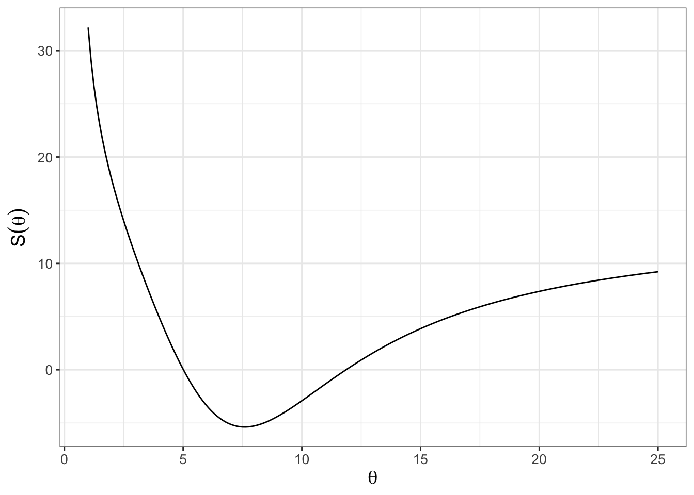
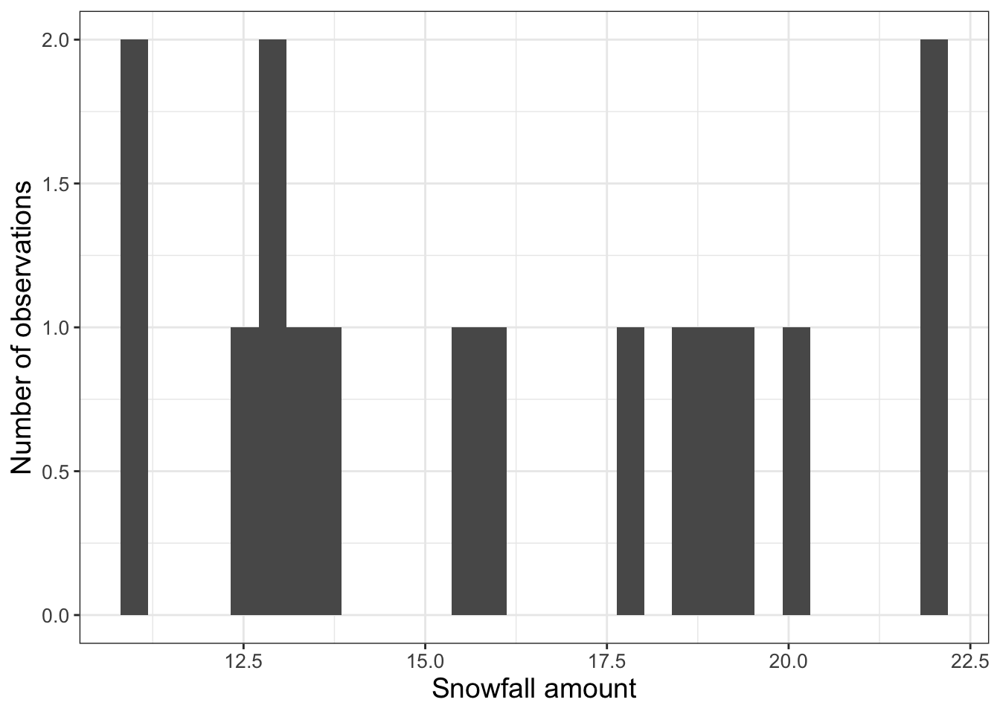
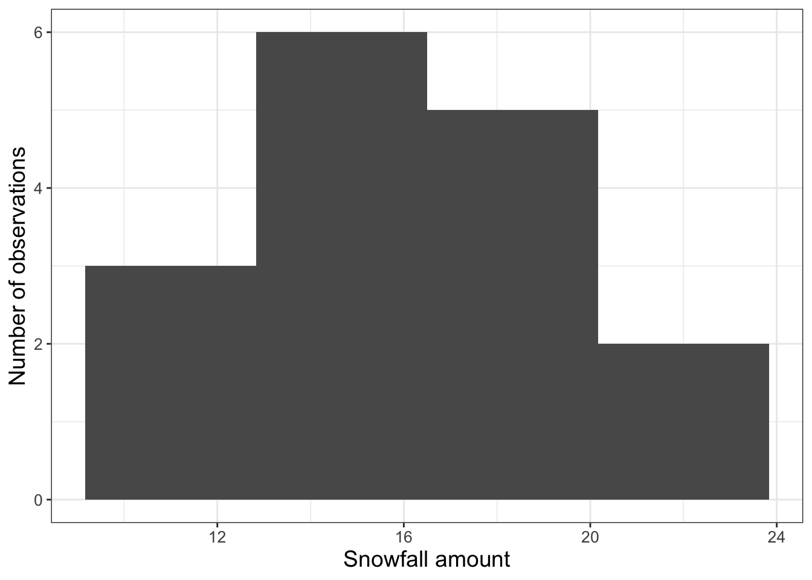
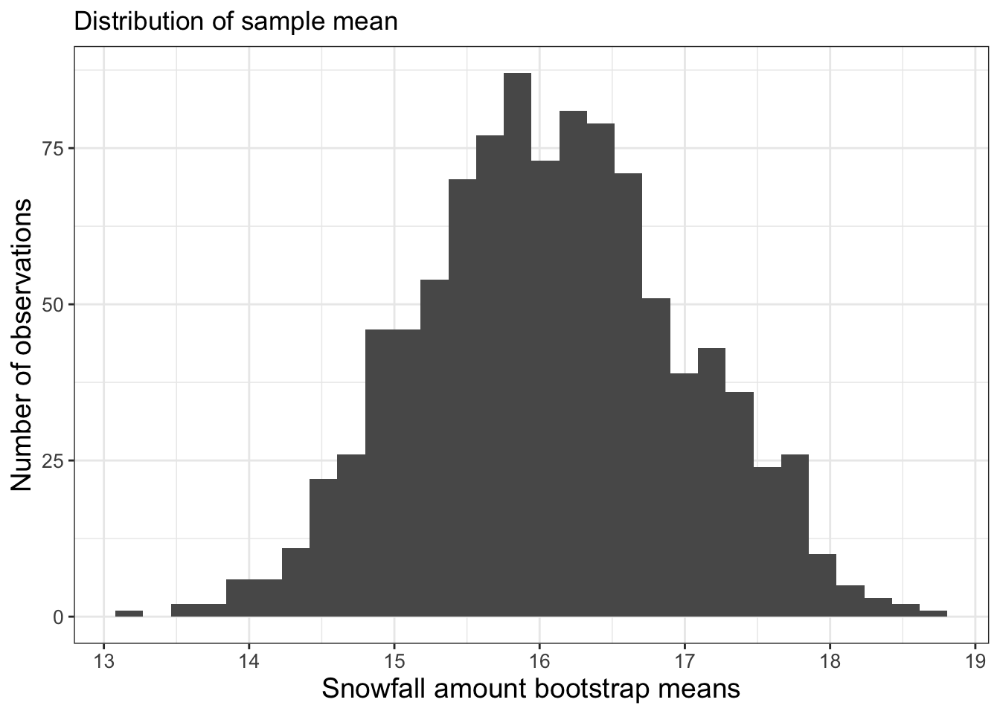
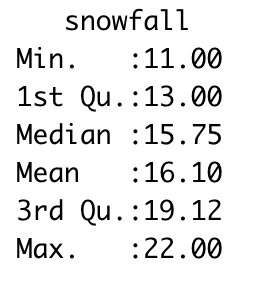

phosphorous data set with the model \(\displaystyle y = 1.737 x^{1/\theta}\).
In Chapter 9, Chapter 10 we saw how the parameter estimation problem is related to optimizing the likelihood or cost function. In most cases - and especially when the model is linear - optimization is straightforward. However for nonlinear models the cost function is trickier. Consider the cost function shown in Figure 11.1, which tries to optimize \(\theta\) for the nutrient equation \(\displaystyle y = 1.737 x^{1/\theta}\) using the dataset phosphorous:

phosphorous data set with the model \(\displaystyle y = 1.737 x^{1/\theta}\).
While Figure 11.1 shows a clearly defined minimum around \(\theta \approx 6\), the shape of the cost function is not quadratic like Figure 10.2 in Chapter 10. For nonlinear models direct optimization of the cost function using techniques learned in calculus may not be computationally feasible.
An alternative approach to optimization relies on the idea of sampling, which randomly selects parameter values and then computes the cost function. After a certain amount of time or iterations, all the values of the cost function are compared to each other to determine the optimum value. We will refine the concept of sampling to determine the optimum value in subsequent chapters Chapters 12 and 13, but this chapter develops some foundations in sampling - we will study how to plot histograms in R and then apply these to the bootstrap method, which relies on random sampling. Let’s get started!
This chapter uses following libraries: ggplot2, purrr, and dplyr (all part of the tidyverse) and data tables from demodelr. See Section 2.3 on how to install packages. Prior to running any code in this section, include library(tidyverse) and library(demodelr).
To introduce the idea of a histogram, consider Table @ref(tab:snow-table), which is a sample of the dataset snowfall in the demodelr package. The snowfall dataset is measurements of precipitations collected at weather stations in the Twin Cities (Minneapolis, Saint Paul, and surrounding suburbs) from a spring snowstorm. These data come from a cooperative network of local observers. Yes, it can snow in Minnesota in April. Sigh.
| date | time | station_id | station_name | snowfall |
|---|---|---|---|---|
| 4/16/18 | 5:00 AM | MN-HN-78 | Richfield 1.9 WNW | 22.0 |
| 4/16/18 | 7:00 AM | MN-HN-9 | Minneapolis 3.0 NNW | 19.0 |
| 4/16/18 | 7:00 AM | MN-HN-14 | Minnetrista 1.5 SSE | 12.5 |
| 4/16/18 | 7:00 AM | MN-HN-30 | Plymouth 2.4 ENE | 18.5 |
| 4/16/18 | 7:00 AM | MN-HN-58 | Champlin 1.5 ESE (118) | 20.0 |
The header row in Table 11.1 also lists the names of the associated variables in this data frame. We are going to focus on the variable snowfall. A histogram is an easy way to view the distribution of measurements, using geom_histogram (Figure 11.2). You may recall that a histogram represents the frequency count of a random variable, typically binned over certain intervals.
ggplot(data = snowfall) +
geom_histogram(aes(x = snowfall)) +
labs(
x = "Snowfall amount",
y = "Number of observations"
)
This code introduces geom_histogram. To create the historgram we use the aesthetic (aes(x = snowfall)) to display the histogram for the snowfall column in the dataset snowfall.
At the R console you may have received a warning about such as stat_bin()` using `bins = 30`. Pick better value with `binwidth`. The function geom_histogram doesn’t guess a bin width, but one rule of thumb is to select the number of bins to be equal to the square root of the number of observations (16 in this instance). So let’s adjust the number of bins to 4 in Figure 11.3.
ggplot() +
geom_histogram(data = snowfall, aes(x = snowfall), bins = 4) +
labs(
x = "Snowfall amount",
y = "Number of observations"
)
The histogram of snowfall measurements (Figure 11.3) from the snowfall data (Table 11.1) represents an empirical probability distribution of measurements. While it is great to have all these observations, a key question is: What is an estimate for the representative amount of snowfall for this storm? The snowfall measurements illustrate the difference between what statisticians call a population (the true distribution of measurements) and a sample (what people observe). To go a little deeper, let’s define a random variable \(S\) for this population, which has an (unknown) probability density function associated with it. The measurements shown Table 11.1 are samples of this distribution. While the average of the precipitation data (16.1 inches) might be a defensible value for the average amount of snow that fell, what we don’t know is how well this empirical mean approximates the expected value of the distribution for \(S\).
Each of the entries in Table 11.1 represents a measurement made by a particular observer. To get the true distribution we would need to add more observers, but that isn’t realistic for this case as the snowfall event has already passed - we can’t go “back in time”.
One way is to generate a bootstrap sample, which is a sample of the original dataset with replacement. The workflow that we will apply is the following:
Do once \(\rightarrow\) Do several times \(\rightarrow\) Visualize \(\rightarrow\) Summarize
“Do once” is the first step, using sampling with replacement. This process is easily done with the R command slice_sample (you should try this out yourself), which in the following code assigns a sample to the variable p_new:
p_new <- slice_sample(snowfall, prop = 1, replace = TRUE)Let’s break this code down:
We are sampling the snowfall data frame with replacement (replace = TRUE). If you are uncertain about how sampling with replacement works, here is one visual: say you have each of the snowfall measurements written on a piece of paper in a hat. You draw one slip of paper, record the measurement, and then place that slip of paper back in the hat to draw again, until you have as many measurements as the original data frame.
The command prop=1 means that we are sampling 100% of the snowfall data frame.
Once we have taken a sample, we can then compute the mean (average) and the standard deviation of the sample:
slice_sample(snowfall, prop = 1, replace = TRUE) |>
summarize(
mean = mean(snowfall, na.rm = TRUE)
) mean
1 16.53125How the above code works is to first do the sampling, and then the summary. The command summarize collapses the snowfall data frame and computes the mean and the standard deviation sd of the column snowfall. We have the command na.rm=TRUE to remove any NA values that may affect the computation.
“Do several times” is the second step. Here we are going to rely on some powerful functionality from the purrr package. This package has the wonderful command map_df, which allows you to efficiently repeat a process several times and return a data frame as output. Evaluate the following code on your own:
purrr::map_df(
1:10,
~ (
slice_sample(snowfall, prop = 1, replace = TRUE) |>
summarize(
mean = mean(snowfall, na.rm = TRUE)
)
) # Close off the tilde ~ ()
) # Close off the map_dfLet’s review this code step by step:
map_df(1:N,~(COMMANDS)), where N is the number of times you want to run your code (in this case N=10).~(COMMANDS) lists the different commands we want to re-run (here the resampling of our dataset and then subsequent summarizing).What should be returned is a data frame that lists the mean of each bootstrap sample. The process of randomly sampling a dataset is called bootstrapping.
I can appreciate that this programming might be a little tricky to understand and follow - don’t worry - the goal is to give you a tool that you can easily adapt to a situation.
“Visualize” is the step where we will use a histogram to examine the distribution of the bootstrap samples. The following code does this all, changing the number of bootstrap samples to 1000:
bootstrap_samples <- purrr::map_df(
1:1000,
~ (
slice_sample(snowfall, prop = 1, replace = TRUE) |>
summarize(
mean_snow = mean(snowfall, na.rm = TRUE)
)
) # Close off the tilde ~ ()
) # Close off the map_df
# Now make the histogram plots for the mean and standard deviation:
ggplot(bootstrap_samples) +
geom_histogram(aes(x = mean_snow)) +
ggtitle("Distribution of sample mean")
Excellent! This is shaping up nicely. Once we have sampled as much we want, then investigate the distribution of the computed sample statistics (we call this the sampling distribution). It turns out that the statistics of the sampling distribution (such as the mean or the standard deviation) will approximate the population distribution statistics when the number of bootstrap samples is large (and 1000 is sufficiently large in this instance).
“Summarize” is the final step, where we compute summary statistics of the distribution of bootstrap means. We will do this by computing a confidence interval, which comes from the percentiles of the distribution.
Here is how we would compute these different statistics using the quantile command shown below:
# Compute the average of the distribution:
mean(bootstrap_samples$mean_snow)[1] 16.07694# Compute the 2.5% and 97.5% of the distribution:
quantile(bootstrap_samples$mean_snow, probs = c(0.025, .975)) 2.5% 97.5%
14.37453 17.81250 Notice how we used the probs=c(0.025,.975) command to compute the different 2.5% and 97.5% quantiles of the distribution of the sample means. Let’s discuss the distribution of bootstrap means. The 2.5 percentile is approximately 14.3 inches. This means 2.5% of the distribution is at 14.3 inches or less. The 97.5 percentile is approximately 17.8 inches, so 97.5% of the distribution is 17.8 inches or less. If we take the difference between 2.5% and 97.5% that is 95%, so 95% of the distribution is contained between 14.3 and 17.8 inches. If we are using the bootstrap mean, we would report that the average precipitation is 16.1 inches with a 95% confidence interval of 14.3 to 17.8 inches. The confidence interval is to give some indication of the uncertainty in the measurements.
The idea of sampling with replacement, generating a parameter estimate, and then repeating over several iterations is at the heart of many computational parameter estimation methods, such as Markov Chain Monte Carlo methods that we will explore in Chapter 13. Bootstrapping (and other sampling with replacement techniques) makes nonlinear problems more tractable.
This chapter extended your abilities in R by showing you how to generate histograms, sample a dataset, and compute statistics. The goal here is to give you examples that you can re-use in this chapter’s exercises. Enjoy!
Exercise 11.1 Histograms are an important visualization tool in descriptive statistics. Read the following essays on histograms, and then summarize 2-3 important points of what you learned reading these articles.
Exercise 11.2 Display the bootstrap histogram of 1000 bootstrap samples for the standard deviation of the snowfall dataset. From this bootstrap distribution (for the standard deviation) what is the median and 95% confidence interval?
Exercise 11.3 (Inspired by Devore, Berk, and Carlton (2021)) Average snow cover from 1970 - 1979 in October over Eurasia (in million km\(^{2}\)) was reported as the following:
\[ \{6.5, 12.0, 14.9, 10.0, 10.7, 7.9, 21.9, 12.5, 14.5, 9.2\} \]
Exercise 11.4 Consider the equation \(\displaystyle S(\theta)=(3-1.5^{1/\theta})^{2}\) for \(\theta>0\). This function is an idealized example for the cost function in Figure 11.1.
Exercise 11.5 Repeat the bootstrap sample for the mean of the snowfall dataset (snowfall) where the number of bootstrap samples is 10,000. Report the median and confidence intervals for the bootstrap distribution. What do you notice as the number of bootstrap samples increases?
Exercise 11.6 Using the data in Exercise 11.3, do a bootstrap sample with \(N=1000\) to compute the a bootstrap estimate for the mean October snowfall cover in Eurasia. Compute the mean and 95% confidence interval for the bootstrap distribution.

summary command.
Exercise 11.7 We computed the 95% confidence interval using the quantile command. An alternative approach to summarize a distribution is with the summary command, as shown in Figure 11.5. We call this command using summary(data_frame), where data_frame is the particular data frame you want to summarize. The output reports the minimum and maximum values of a dataset. The output 1st Qu. and 3rd Qu. are the 25th and 75th percentiles.
Do 1000 bootstrap samples using the data in Exercise 11.3 and report the output from the summary command.
Exercise 11.8 The dataset precipitation lists rainfall data from a fall storm that came through the Twin Cities.